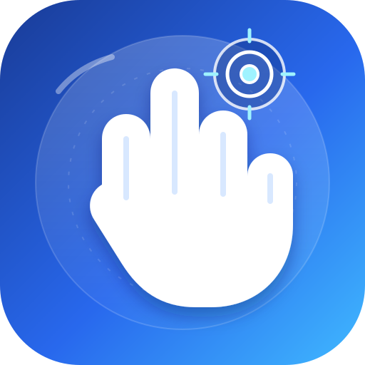

Use AirHand on your Android phone.
This guide explains the two AirHand options, how to install them, which permissions are needed, and how to start controlling the phone with hand gestures.
APK download note: sign in to GitHub first, then open the successful build and select AirHand-Mobile-debug-APK under Artifacts. The ZIP link itself may show “Requires authentication” if opened outside a signed-in GitHub session.
1. Choose the version you need
Browser app / PWA
Runs inside its own page. Good for trying the camera gesture playground, cursor calibration and games. It cannot tap or navigate other Android apps.
AirHand Mobile APK
Native Android prototype for a floating cursor and system-wide gestures where Android allows them. Requires Accessibility and display-over-other-apps permission.
2. Download and install the Android APK
Open the build page
Tap this Android build. If GitHub asks, sign in to your GitHub account. The build must say Success.
Download the artifact
Scroll to Artifacts, tap AirHand-Mobile-debug-APK, and download the ZIP. If Artifacts is missing, check you opened the successful run, not a queued or failed one.
Extract the ZIP
Open Samsung My Files or your file manager, go to Downloads, tap the ZIP and extract it. Find app-debug.apk.
Allow this installation
Tap the APK. Android may ask you to allow your browser or file manager to install unknown apps. Only allow it for the app you used to download this file, then return and install. You can switch this permission off again afterwards.
Open AirHand
Launch AirHand from your app drawer. If Android blocks the installer, check that you downloaded the APK from the official Mahin98250/AirHand repository.
3. Enable the permissions
Camera
Tap the camera preview/start button and allow camera access. Keep your hand visible, well lit and not too close to the lens.
Accessibility — AirHand Gesture Actions
From AirHand, open Accessibility settings. Find AirHand Gesture Actions under installed/downloaded apps and turn it on after reading Android's warning. This is required for supported system-wide gestures.
Display over other apps
Allow AirHand to display over other apps so the floating cursor can be shown. Return to AirHand afterwards.
Notifications
Allow notifications when requested. The ongoing notification provides Pause/Resume and Stop controls while system-wide mode runs.
Keyboard and voice typing (optional)
Open Android's input-method settings from AirHand, enable AirHand Gesture Keyboard, then choose it as the active keyboard. Grant microphone permission only if you want voice entry. Speech availability and offline behavior depend on your phone's speech service.
4. Calibrate and start controlling
Calibrate for your hand
Start the camera preview. Tap Calibrate cursor range · 5 seconds. Move your index fingertip slowly through the widest comfortable area in both directions. If the range is rejected, repeat with a larger horizontal and vertical sweep.
Start system-wide control
Tap Start system-wide gesture control and confirm the explanation. The camera remains active while the foreground service is running.
Try one gesture at a time
Test in a harmless app such as a notes page first. Move slowly and deliberately, wait for each gesture to finish, and re-form a held pose before using it again. Open-palm movement uses the dominant direction: mostly vertical motion requests a vertical scroll, while mostly horizontal motion requests a left/right swipe. Keep the palm open and move far enough to cross the gesture threshold; small hand tremors should not trigger an action.
Gesture quick reference
Point Move cursor Brief pinch + release Tap Hold steady pinch Long press Open palm up/down Scroll Open palm left/right Swipe horizontally Peace sign Back Thumbs-up Home Fist Recent apps
5. Play Air Drive 3D with hand gestures
Start in the browser version
Open the AirHand browser app, choose Air Drive, leave 3D physics: ON, enable the camera and allow camera access, then tap Start engine. The 3D renderer and physics engine load the first time you start a session. A first-time load needs internet access.
Graphics quality
Use Auto · Smooth for balanced performance, especially on phones. Ultra · 4K-ready requests a higher rendering resolution on capable hardware; it adapts downward if frame times become slow. Actual 4K output depends on the display and browser, so Ultra does not guarantee native 4K on every phone.
Driving gestures
- Steer: keep both hands visible and rotate them together as if holding and turning a steering wheel. Use the steering calibration control to set a comfortable neutral position.
- Accelerate: make a fist with the hand on the right side of the camera.
- Brake: open that hand into a flat palm.
- Nitro: show a thumbs-up with that hand.
- Touch and keyboard: use the existing on-screen and keyboard controls if a gesture is not recognised.
- Pause: tap Pause before changing scenery, adjusting your camera or taking a break.
6. Pause, stop and fix common issues
Pause immediately
Use Pause in the persistent AirHand notification to disable gesture actions. Resume only when ready.
Stop completely
Tap Stop in the notification or use AirHand's Emergency stop to stop tracking and release resources.
Cursor doesn't reach edges
Stop the system-wide session, return to the camera preview, repeat calibration with a wider comfortable range, then restart the service.
No cursor or gestures
Check camera permission, Accessibility, overlay permission and notification. Keep the hand in frame, improve lighting, then stop and restart tracking.
APK ZIP says “Requires authentication”
That is GitHub protecting the Actions artifact endpoint. Sign in at github.com in your browser, revisit the build page and download the artifact from its Artifacts section. Do not use the raw api.github.com/.../zip address as a public direct-download link.
Camera or speech doesn't work offline
The Android hand model is packaged in the APK, but voice recognition depends on the selected speech provider. The browser PWA needs internet to fetch its hand-tracking runtime/model on first use.